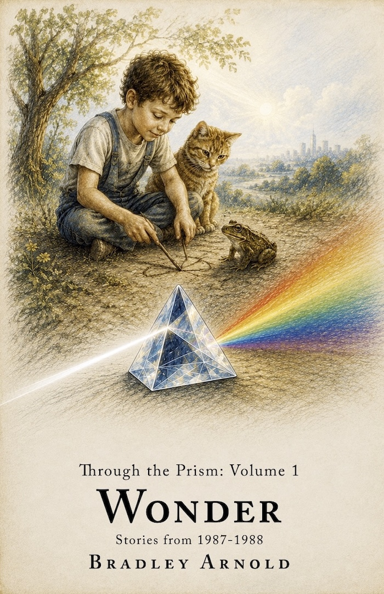

Perception & Reality
Examining the relationship between the world we experience and the ways in which we interpret it.
An Ongoing Conversation About Being Human

Through the Prism — Volume III
The joy of discovering.
Sometimes discovery is not about finding something new, but recognizing something that has been there all along.
Recognition explores the ways in which we perceive ourselves, other people, and the world around us.
Through imaginative fiction, philosophical essays, poetry, and personal reflections, this volume examines language, identity, freedom, responsibility, and the assumptions through which we understand life.
The final volume of Through the Prism does not bring the conversation to a conclusion. It invites us to look again at what we thought we already understood.
There are moments when something familiar suddenly appears unfamiliar.
Nothing necessarily changes in the object, the person, or the experience itself. What changes is something in the way we understand it.
A word acquires a different meaning. A memory reveals an unexpected connection. A familiar belief becomes a question. An ordinary experience becomes something worth examining.
Recognition is not always the discovery of something previously unknown. Sometimes it is the discovery that what we thought we knew was considerably more complicated than we imagined.
Such discoveries can be uncomfortable, liberating, amusing, or bewildering. They can challenge our understanding of ourselves as readily as they challenge our understanding of the world.
The writings in this volume explore some of those moments and the possibilities that emerge from them.
Language allows us to describe experiences, communicate ideas, preserve memories, and share something of our understanding with other people.
Yet the words we use are not the experiences themselves.
A description of a tree is not a tree. An explanation of an emotion is not the experience of that emotion. A definition of a person cannot contain everything that person is.
Nevertheless, we often become so accustomed to our descriptions and explanations that we begin to confuse them with the things they represent.
Language can help us recognize relationships and possibilities that might otherwise remain unnoticed. It can also influence what we notice and what we fail to notice.
The relationship between language, thought, experience, and understanding has fascinated me throughout much of my life as a writer and educator.
Writing offers an opportunity not only to examine our ideas, but also to examine the words through which those ideas become recognizable.
We develop ideas about ourselves through our experiences, relationships, memories, accomplishments, and the expectations of the people around us.
Over time, some of those ideas become so familiar that we rarely question them.
We may begin to confuse what we have done with who we are, what others believe about us with what we must become, or what we have experienced with what remains possible.
Recognizing these distinctions does not necessarily tell us who we are.
It may, however, allow us to reconsider some of the limitations we have accepted without examining them.
Questions of identity are therefore also questions of freedom, choice, and responsibility.
What becomes possible when we are willing to reconsider our understanding of ourselves?
Examining the relationship between the world we experience and the ways in which we interpret it.
Exploring the possibilities and limitations of words as expressions of thought, experience, and understanding.
Reconsidering the descriptions, judgments, memories, and expectations through which we understand ourselves.
Exploring the relationship between personal choice, uncertainty, and the consequences of our decisions.
Examining what happens when familiar explanations no longer adequately account for our experiences.
Discovering how changes in understanding can reveal possibilities that were previously difficult to imagine.
Recognition brings together imaginative fiction, philosophical essays, poetry, and reflections concerned with the ways in which we understand life.
Its writings approach questions of language, perception, identity, freedom, and human relationships through different literary forms.
Some explore ideas directly. Others allow those ideas to emerge through the experiences, choices, and discoveries of fictional characters.
Not every character discovers the same things, and not every story offers a comfortable resolution.
Readers are invited to participate in these explorations rather than simply accept the conclusions of the writer or his characters.
I have spent a considerable portion of my life exploring ideas about what it means to be human.
I have enjoyed thinking about life, writing about life, discussing life, and developing explanations about life.
These activities have brought me considerable pleasure and have enriched my experiences in many ways.
Yet understanding something intellectually and experiencing it personally are not necessarily the same thing.
Understanding can enrich our experience of living. Living can challenge and enrich our understanding.
Neither needs to replace the other.
Perhaps one of the pleasures of being alive is the continuing conversation between what we understand and what we experience.
An illustration offers a different kind of encounter with an idea.
A reflection, a shadow, an expression, or a relationship between objects can suggest something without explicitly explaining it.
An image may draw attention to an aspect of a story that the reader had not previously considered.
It may also introduce an interpretation quite different from the one the reader originally imagined.
The illustrations associated with Recognition are another opportunity to explore the relationship between perception, imagination, and understanding.
Many of the philosophical questions explored in Through the Prism have continued to interest me throughout my life.
They have appeared in my experiences as an educator, in my encounters with different cultures, in my relationships, and more recently in my experiences of recovery.
The circumstances have changed. The questions have developed. Some of my assumptions have been reconsidered.
Yet there remains a continuing fascination with the relationship between understanding ourselves and experiencing life.

A more personal exploration of memory, identity, recognition, and becoming.
While Recognition approaches many of these questions through fiction and philosophical inquiry, The Red Key revisits experiences from my own life in an attempt to understand how I became the person I was.
Explore the BookTitle: Recognition
Collection: Through the Prism
Volume: III
Author: Bradley Arnold
Subjects: Fiction, philosophy, poetry, language, perception, identity, freedom, understanding, and the human experience.
Recognition is available individually and is the third volume of the Through the Prism collection.
Recognition need not be the end of an exploration.
A change in understanding can awaken new questions, encourage new encounters, and reveal new possibilities for discovery.

Rediscovering curiosity, imagination, humor, and the pleasure of questioning.
Explore Volume I
Exploring the discoveries that emerge when people, experiences, and different perspectives come together.
Explore Volume IIEvery book has to end somewhere.
Conversations, fortunately, are under no such obligation.